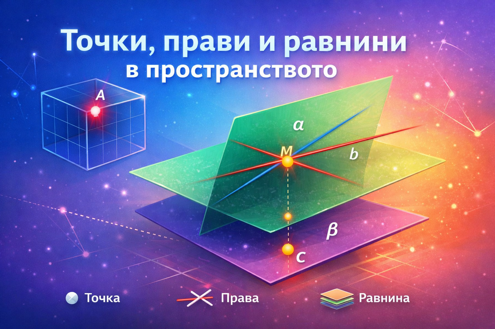

Идея и педагогически решения: Валя Витковска | Създаден с AI
I. Основни понятия и обекти в пространството
Изграждането на стереометрията се извършва чрез аксиоматичен подход. Въвеждат се първични понятия (обекти), за които не се дават строги определения, а се описват чрез техните свойства и физически модели.
Точки
Означават се с главни латински букви: A, B, C...
Прави
Означават се с малки букви: a, b, c...
Равнини
Означават се с гръцки букви: α, β, γ...
Математически означения и принадлежност
Бърза проверка
Кое означение ще използваме, за да запишем, че правата $p$ пробожда равнината $\beta$ в точка $K$?
II. Аксиоми в стереометрията
Свойствата на основните обекти се задават чрез аксиоми - твърдения, които се приемат за истински без доказателство.
Бърза проверка
Ако две различни равнини имат обща точка, какво геометрично място от точки формира сечението им?
III. Основни построения: Определяне на равнина
Въз основа на Аксиома 1 можем да изведем следните четири начина за определяне на равнина:
IV. Взаимно положение на две прави
В пространството две прави могат да бъдат: пресичащи се, успоредни или кръстосани.
V. Ъгъл между кръстосани прави
Тъй като кръстосаните прави не се пресичат, ъгълът между тях се намира чрез успоредно пренасяне (транслация), докато се пресекат.
VI. Успоредни прави: Свойства и Теореми
Свойствата на успоредните прави в равнината се запазват и в пространството, но се добавят и нови важни теореми.
VII. Практически задачи с динамични чертежи
Задача 1
Защо маса с три крака е стабилна?
Задача 2
Колко равнини определят три прави, минаващи през една точка?
Задача 3
Четири точки не лежат в една равнина. Може ли три от тях да лежат на една права?
Задача 4
Покажете двойки ръбове на стаята, които са успоредни, пресичащи се и кръстосани прави.
Задача 5
Даден е куб $ABCDA_1B_1C_1D_1$. Запишете ръбовете на куба, които се отнасят към ръба $A_1D_1$ по следния начин:
а) $A_1B_1, A_1A, D_1C_1, D_1D$
б) $AD, BC, B_1C_1$
в) $AB, CD, BB_1, CC_1$
Задача 6
Дадена е триъгълна пирамида $ABCD$. Запишете двойките ръбове на пирамидата, които са кръстосани.
Задача 7
Даден е куб $ABCDA_1B_1C_1D_1$. Намерете посочените ъгли:
а) Тъй като $CC_1 || BB_1$, ъгълът е $\angle(AB_1, BB_1) = 45^\circ$ (ъгъл в квадрат).
б) Тъй като $B_1D_1 || BD$, ъгълът е $\angle(AC, BD) = 90^\circ$ (диагонали в квадрат).